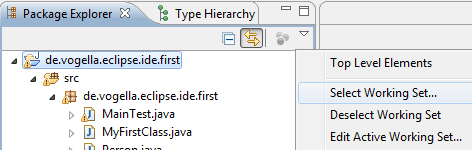

Eclipse Crash Course
Presented by Leslie H. Watter
leslieh@celepar.pr.gov.br
Eclipse
- 1. What is Eclipse?
- 2. Eclipse Foundation
- 3. Eclipse Public License
- 4. Eclipse Installation
- …
1. What is Eclipse?
Most people know Eclipse as an integrated development environment (IDE) for Java. Today it is the leading development environment for Java with a market share of approximately 65%.
Eclipse is created by an Open Source community and is used in several different areas, e.g. as a development environment for Java or Android applications. The roots of Eclipses go back to 2001.
1. What is Eclipse?
The Eclipse Open Source community has over 200 Open Source projects covering different aspects of software development.
The Eclipse IDE can be extended with additional software components. Eclipse calls these software components plug-ins. Several Open Source projects and companies have extended the Eclipse IDE or created standalone applications (Eclipse RCP) on top of the Eclipse framework.
2. Eclipse Foundation
The Eclipse projects are governed by the Eclipse Foundation. The Eclipse Foundation is a non-profit, member supported corporation that hosts the Eclipse Open Source projects and helps to cultivate both an Open Source community and an ecosystem of complementary products and services.
3. Eclipse Public License
The Eclipse Public License (EPL) is an Open Source software license used by the Eclipse Foundation for its software. The EPL is designed to be business-friendly. EPL licensed programs can be used, modified, copied and distributed free of charge. The consumer of EPL-licensed software can choose to use this software in closed source programs. Only modifications in the original EPL code must also be released as EPL code.
The Eclipse Foundation also validates that source code contributed to Eclipse projects is free of Intellectual Property (IP) issues. This process is known as IP cleansing.
The permissive EPL and the IP cleansing effort of the Eclipse Foundation makes reusing the source code of Eclipse projects attractive for business companies.
4. Eclipse Installation
- 4.1. Java requirements of Eclipse
- 4.2. Download Eclipse
- 4.3. Install Eclipse
4.1. Java requirements of Eclipse
Eclipse requires an installed Java runtime. Eclipse 4.2 requires at least Java 5 to run.
Inside Celepar you should use Java in version 6. It'll be provided by the company's machine installation, don't worry.
The Eclipse IDE contains its own Java compiler hence a JRE is sufficient for most tasks with Eclipse.
The JDK version of Java is required if you compile Java source code on the command line and for advanced development scenarios, for example if you use automatic builds or if you develop Java web application.
4.2. Download Eclipse
The Eclipse IDE consists out of several components. The Eclipse.org website provides pre-packaged Eclipse distributions to provide downloads for typical use cases. The Eclipse IDE for Java Developers distribution is specifically designed for standard Java development.
Download the Eclipse IDE for Java Developers package from the following URL. Ensure that you download the right version for your Java version (32 bit vs. 64 bit).
4.2. Download Eclipse
The following screenshot shows the Eclipse download website for a Linux system, press on the link beside the package description, e,g, Linux 64 Bit to start the download.
The download is a .zip file.
4.3. Install Eclipse
After you downloaded the .zip file with the Eclipse distribution you unpack it to a local directory.
Most operating systems can extract zip files in their file browser, e.g. Windows 7 with a right mouse click on the file and selecting "Extract all…".
Warning
Extract Eclipse to a directory without spaces in its path and do not use a mapped network drive (Windows). Eclipse sometimes has problems with such a setup.
After unpacking the zip file, Eclipse is ready to be used; no additional installation procedure is required.
Celepar Environment
In Celepar's environment you'll receive a ready machine with a specially prepared package of Eclipse's installation.
Take in account that you'll receive some instructions howto look at the Company's development patterns (they're still changing).
In short, you'll receive a machine with Eclipse, maven, and other develpment tools installed.
Celepar Environment
Where to look at?
- Directories:
- Old System Defaults to:
- /usr/lib/eclipse
- /usr/lib/jboss4
- New Systems - Ubuntu
- home/desenv or usr/lib/desenv
- bin
- repositorio
- servers
- jboss
- jboss4.0.5
- jboss4.2.3
- jboss7 -> jboss
- tomcat
- workspaces or $HOME/workspace
- home/desenv or usr/lib/desenv
- Old System Defaults to:
Celepar Environment
The latest news from Celepar's Eclipse's package / environment can be found at:
- Sites:
- Persons:
- Leslie :)
- GGA folks
5. Getting started
- 5.1. Starting Eclipse
- 5.2. Appearance
5.1. Starting Eclipse
To start Eclipse click on the eclipse icon at your launcher bar.
The system will prompt you for a workspace. The workspace is the place in which you work.
Select an empty directory and press the OK button.
5.1. Starting Eclipse
Eclipse starts and shows the Welcome page. Close this page by pressing the X beside Welcome.
5.1. Starting Eclipse
After closing the welcome screen you see a screen similar to the following screenshot.
5.2. Appearance
The appearance of Eclipse can be configured. By default Eclipse ships with a few themes but you can also extend Eclipse with new themes. The appendix of this tutorial lists popular themes.
To change the appearance, select from the menu Window → Preferences → General → Appearance.
The Theme selection allows you to change the appearance of your Eclipse IDE. Disabling the animations will make your Eclipse run faster.
Please note that you need to restart Eclipse to apply a new theme completely.
6. Important Eclipse terminology
Eclipse provides Perspectives, Views and Editors. Views and Editors are grouped into Perspectives.
- 6.1. Workspace
- 6.2. Eclipse projects
- 6.3. Views and editors - parts
- 6.4. Perspective
6.1. Workspace
The workspace is the physical location (file path) you are working in. Your projects, source files, images and other artifacts can be stored and saved in your workspace. The workspace also contains preferences settings, plug-in specific meta data, logs etc.
You typically use different workspaces if you require different settings for your project or if you want to divide your projects into separate directories.
Note
Your projects must not reside within the workspace directory. It is possible to refer to external resources, e.g. projects, from the workspace.
You can choose the workspace during startup of Eclipse or via the menu (File → Switch Workspace → Others) .
6.2. Eclipse projects
An Eclipse project contains source, configuration and binary files related to a certain task and groups them into buildable and reusable units.
An Eclipse project can have natures assigned to it which describe the purpose of this project.
For example the Java nature defines a project as Java project. Projects can have multiple natures combined to model different technical aspects.
Natures for a project are defined via the .project file in the project directory.
Projects in Eclipse cannot contain other projects. (This is only valid if you're not using maven, which supports nested projects/modules!)
6.3. Views and editors - parts
Parts are user interface components which allow you to navigate and modify data. A part can have a dropdown menu, context menus and a toolbar. Parts are typically divided into views and editors.
The distinction into views and editors is not based on technical differences, but on a different concept of using and arranging these parts.
6.3. Views and editors - parts
A view is typically used to work on a set of data, which might be a hierarchical structure. If data is changed via the view , this change is typically directly applied to the underlying data structure. A view sometimes allows us to open an editor for a selected set of data.
An example for a view is the Package Explorer, which allows you to browse the files of Eclipse projects. If you change data in the Package Explorer, e.g. renaming a file, the file name is directly changed on the file system.
6.3. Views and editors - parts
Editors are typically used to modify a single data element, e.g. a file or a data object. To apply the changes made in an editor to the data structure, the user has to explicitly save the editor content.
Editors and views can be freely positioned in the user interface.
For example the Java editor is used to modify Java source files. Changes to the source file are applied once the user selects the Save command. A dirty editor is marked with an asterisk.
6.4. Perspective
A Perspective is a visual container for a set of parts.
The Eclipse IDE uses perspectives to arrange parts and configure the menu and the toolbar for different development tasks.
Open editors are shared between perspectives, i.e. if you have an editor open in the Java perspective for a certain class and switch to the Debug perspective, this editor stays open.
You can switch Perspectives via the Window → Open Perspective → Other… menu entry.
6.4. Perspective
The main perspectives used for Java development are the Java perspective and the Debug perspective.
6.4. Perspective
You can change the layout and content within a Perspective by opening or closing parts and by re-arranging them.
To open a new part in your current Perspective use the Window → Show View → Other… menu entry. The following Show View dialog allows you to search for certain parts.
6.4. Perspective
If you want to reset your current perspective to its default, use the Window → Reset Perspective menu entry.
You can save the currently selected perspective via Window → Save Perspective As….
6.4. Perspective
The Window → Customize Perspective… menu entry allows you to adjust the selected perspective. For example you can hide or show toolbar and menu entries.
7. Eclipse Java development user interface
- 7.1. Perspectives in Eclipse
- 7.2. Resetting a perspective
- 7.3. Java perspective and Package Explorer
7.1. Perspectives in Eclipse
Eclipse provides different perspectives for different tasks. The available perspectives depend on your installation.
For Java development you usually use the Java Perspective, but Eclipse has much more predefined perspectives, e.g. the Debug perspective.
Eclipse allows you to switch to another perspective via the Window → Open Perspective → Other… menu entry.
7.2. Resetting a perspective
A common problem is that you changed the arrangement of views and editors in your perspective and you want to restore Eclipse to its original state. For example you might have closed a view .
You can reset a perspective to its original state via the Window → Reset Perspective menu entry.
7.3. Java perspective and Package Explorer
The default perspective for Java development can be opened via Window → Open Perspective → Java.
On the left hand side, this perspective shows the Package Explorer view, which allows you to browse your projects and to select the components you want to open in an editor via a double-click.
For example to open a Java source file, open the tree under src, select the corresponding .java file and double-click it. This will open the file in the default Java editor.
7.3. Java perspective and Package Explorer
The following picture shows the Eclipse IDE in its standard Java perspective.
7.3. Java perspective and Package Explorer
The Package Explorer view is on the left. In the middle you see the open editors.
7.3. Java perspective and Package Explorer
Several editors are stacked in the same container and you can switch between them by clicking on the corresponding tab.
Via drag and drop you can move an editor to a new position in the Eclipse IDE.
7.3. Java perspective and Package Explorer
To the right and below the editor area you find more views which were considered useful by the developer of the perspective. For example the Javadoc view shows the Javadoc of the selected class or method.
8. Eclipse Java perspective
- 8.1. Toolbar
- 8.2. Useful views
- 8.3. Package Explorer view
- 8.4. Outline view
- 8.5. Problems view
- 8.6. Javadoc view
- 8.7. Java editor
8.1. Toolbar
The application toolbar contains actions which you typically perform, e.g. creating Java resources or running Java projects. It also allows you to switch between perspectives.
8.2. Useful views
The Java perspective contains useful views for working with your Java project. The following description explains the most important ones.
8.3. Package Explorer view
The Package Explorer view allows you to browse the structure of your projects and to open files in an editor via a double-click on the file.
8.3. Package Explorer view
It is also used to change the structure of your project. For example you can rename files or move files and folders via drag and drop. A right-click on a file or folder shows you the available options.
8.4. Outline view
The Outline view shows the structure of the currently selected source file.
8.5. Problems view
The Problems view shows errors and warning messages. Sooner or later you will run into problems with your code or your project setup. To view the problems in your project you can use the Problems view which is part of the standard Java perspective. If this view is closed you can open it via Window → Show View → Problems.
8.5. Problems view
The messages which are displayed in the Problems view can be configured via the drop-down menu of the view . For example, to display the problems from the currently selected project, select Configure Contents and set the Scope to On any element in the same project.
8.5. Problems view
8.5. Problems view
The Problems view also allows you to trigger a Quick fix via a right mouse-click on several selected messages. See Section 15.2, “Quick Fix” for details on the Quick fix functionality.
8.6. Javadoc view
The Javadoc view shows the documentation of the selected element in the Java editor.
8.7. Java editor
The Java editor is used to modify the Java source code. Each Java source file is opened in a separate editor.
8.7. Java editor
If you click in left column of the editor you can configure its properties for example that line number should be displayed.

9. Create your first Java program
- 9.1. Target of this exercise
- 9.2. Create project
- 9.3. Create package
- 9.4. Create Java class
- 9.5. Run your project in Eclipse
9.1. Target of this exercise
The following section describes how to create a minimal Java application using Eclipse. It is tradition in the programming world to create a small program which writes "Hello World" to the console. We will adapt this tradition and will write "Hello Eclipse!" to the console.
9.2. Create project
This tutorial uses the naming convention that the project is named the same as the top-level package in the project.
Just as an example we will follow the convention used by voegella listed here.
At Celepar we use: br.gov.pr.celepar
9.2. Create project
Select File → New → Java project from the menu.
Enter de.vogella.eclipse.ide.first as the project name. Select the Create separate folders for sources and class files flag.
9.2. Create project
Press the Finish button to create the project. A new project is created and displayed as a folder. Open the de.vogella.eclipse.ide.first folder and explore the content of this folder.
9.3. Create package
In the following step you create a new package. A good convention for the project and package name is to use the same name for the top level package and the project. For example if you name your project com.example.javaproject you should also use com.example.javaproject as top level package name.
To create the de.vogella.eclipse.ide.first package, select the src folder , right-click on it and select New → Package.
9.3. Create package
Tip
Reverse domain names should be used for packages to prevent name clashes. It is relatively unlikely that another company defines a class called test in the com.vogella package because this is the reverse URL of the vogella GmbH company.
Just as an example we will follow the convention used by voegella listed here.
At Celepar we use: br.gov.pr.celepar
9.3. Create package
Enter the name of your new package in the dialog and press the Finish button.
9.4. Create Java class
Create a Java class. Right-click on your package and select New → Class.
9.4. Create Java class
Enter MyFirstClass as the class name and select the public static void main (String[] args) flag.
Press the Finish button.
9.4. Create Java class
This creates a new file and opens the Java editor. Change the class based on the following listing.
package de.vogella.eclipse.ide.first; public class MyFirstClass { public static void main(String[] args) { System.out.println("Hello Eclipse!"); } }
You could also directly create new packages via this dialog. If you enter a new package in this dialog, it is created automatically.
9.5. Run your project in Eclipse
Now run your code. Either right-click on your Java class in the Package Explorer or right-click in the Java class and select Run-as → Java application.
9.5. Run your project in Eclipse
Eclipse will run your Java program. You should see the output in the Console view .
9.5. Run your project in Eclipse
Congratulations! You created your first Java project, a package, a Java class and you ran this program inside Eclipse.
10. Run Java program outside Eclipse
- 10.1. Create JAR file
- 10.2. Run your program outside Eclipse
10.1. Create JAR file
To run the Java program outside of the Eclipse IDE you need to export it as a JAR file. A JAR file is the standard distribution format for Java applications.
Select your project, right-click it and select the Export menu entry.
10.1. Create JAR file
Select JAR file and select the Next button. Select your project and enter the export destination and a name for the JAR file. I named it myprogram.jar.
10.1. Create JAR file
Press The Finish button. This creates a JAR file in your selected output directory.
10.2. Run your program outside Eclipse
Open a command shell, e.g. under Microsoft Windows select Start → Run and type cmd and press enter. This should open a console.
Switch to the directory which contains the JAR file , by typing cd path. For example if your jar is located in c:\temp use the following command.
cd c:\temp
or
cd tmp
10.2. Run your program outside Eclipse
To run this program include the JAR file into your classpath. The classpath defines which Java classes are available to the Java runtime. You can add a jar file to the classpath with the -classpath option.
java -classpath myprogram.jar de.vogella.eclipse.ide.first.MyFirstClass
Type the above command in the directory you used for the export and you see the "Hello Eclipse!" output in your command shell.
11. Exporting and importing projects
- 11.1. Exporting projects
- 11.2. Importing projects
11.1. Exporting projects
You can export and import Eclipse projects. This allows you to share projects with other people and to import existing projects.
To export Eclipse projects, select File → Export → General → Archive File and select the projects you want to export.
11.1. Exporting projects
11.2. Importing projects
To import projects, select File → Import → Existing Projects into Workspace. You can import from an archive file, i.e. zip file or directly import the projects in case you have extracted the zip file.
11.2. Importing projects
12. Navigating the Java source code
- 12.1. Package Explorer
- 12.2. Filter resources in the Package Explorer
- 12.3. Closing and opening projects
- 12.4. Link Package Explorer with editor
12.1. Package Explorer
The primary way of navigating through your project is the Package Explorer. You can open nodes in the tree and open a file in an editor by double-clicking on the corresponding entry in the Package Explorer.
12.2. Filter resources in the Package Explorer
The drop-down menu in the Package Explorer allows you to filter the resources which should be displayed or hidden.
12.2. Filter resources in the Package Explorer
12.3. Closing and opening projects
You can close projects via right-click and by selecting the Close Project menu entry. Alternatively if you work on a project you can close all unrelated projects via right-click and by selecting the Close Unrelated Projects menu entry.
Closing projects saves memory in Eclipse and can reduce the build time. To open a closed project double-click on it, or right-click it and select Open Project.
Eclipse ignores closed projects, e.g. the Problems view does only show errors of closed projects. This typically helps to focus your attention on the project.
Tip
You can use the filter functionality for the Package Explorer view to hide the closed projects.
12.4. Link Package Explorer with editor
The Package Explorer view allows you to display the associated file from the currently selected editor. For example if you are working on the Foo.java file in the Java editor and switch to the Java editor of the Var.java file, then the corresponding file will be selected in the Package Explorer view.
12.4. Link Package Explorer with editor
To activate this behavior, press the Link with Editor button in the Package explorer view as depicted in the following screenshot.
13. Navigate in the Java source code
You can also use other means than the Package Explorer to navigate your source code. The following description lists the most important ones.
- 13.1. Opening a class
- 13.2. Mouse and keyboard navigation
- 13.3. Quick Outline
- 13.4. Open Type Hierarchy
- 13.5. Search dialog
- 13.6. Incremental find
- 13.7. Find element based on current selection
- 13.8. Annotation navigations
- 13.9. Show in Breadcrumb
- 13.10. Shortcuts
13.1. Opening a class
You can navigate between the classes in your project via the Package Explorer view as described before. You can navigate the tree and open a file via double-click.
13.1. Opening a class
In addition you can open any class by positioning the cursor on the class in an editor and pressing F3. Alternatively, you can press Ctrl+Shift+T. This shows the following dialog in which you can enter the class name to open it.
13.1. Opening a class
You can also search for package names. Each part of the package name must end with a . (the dot character) so that the Open Type Dialog can identify it as package.
Tip
You only need to specify part of each segment of the package name. Assume for example that you search for the org.eclipse.swt.widgets.Button class. To find this class you can use the search term org.eclipse.swt.widgets.Button or o.e.s.w.Button or o.Button.
13.1. Opening a class
13.1. Opening a class
The Open Type Dialog also supports camel-case like search, e.g. it matches capital letters in the class name. For example if you would search for the OnTouchListener class you could use OTL or OToList as search term.
13.1. Opening a class
Tip
To avoid suffix matching you can add a space after the class name. For example you can type Selection (there is a space after selection) to match the Selection class but not the SelectionListener class. Wildcards like * are also supported.
13.2. Mouse and keyboard navigation
In lot of cases you can also use the mouse to navigate to or into an element if you press the Ctrl key. For example press the Ctrl key and (left) click with the mouse on the name of a class to jump into the class declaration.
Similar to the left mouse click combined with the Ctrl, you can use the F3 key to go into a class.
13.3. Quick Outline
If you right-click in your Java editor, you can select the Quick Outline option which shows you an outline of your Java class with the option to filter.
13.3. Quick Outline
The shortcut for opening the Quick Outline is Ctrl+O. By default Quick Outline shows only the direct members and fields of the class. Press Ctrl+O again to show also the inherited members and fields.
The default look of the Quick Outline option is similiar to the Quick Outline view of the Java perspective.
13.4. Open Type Hierarchy
The type hierarchy of a class shows you which classes it extends and which interfaces it implements. You can use the type hierarchy to navigate to one of these elements.
To open the type hierarchy of the selected class, right-click in the editor and select Open Type Hierarchy (Shortcut: F4) or Quick Type Hierarchy (Shortcut: Ctrl+T).
13.5. Search dialog
Via the Search → Search menu (Shortcut: Ctrl+H) you can open the search dialog of Eclipse.
Use the Java Search tab to search for Java elements, e.g. methods.
13.5. Search dialog
The Search view shows the search results for the selected scope. You can double-click on a search entry to navigate to the corresponding position in the editor. The currently selected search result is also indicated via an arrow in the left border of the editor.
13.5. Search dialog
Use the File Search tab to search for text.
13.5. Search dialog
Eclipse associates file extensions with the default tab. You can customize the available search tabs via the Customize button in the Search dialog. Via the Remenber the last used page you can configure Eclipse to use your last tab as default.
13.5. Search dialog
13.5. Search dialog
Tip
The Search view allows you to delete search results via the Delete key.
13.6. Incremental find
You can use the Ctrl+J shortcut to activate Incremental Find.
13.6. Incremental find
This allows you to search in the current active editor for a text which is displayed in the status line as depicted by the following screenshot.
Repeat Ctrl+J in order to move to the next occurrences of the current search term.
13.6. Incremental find
The advantage of this search is that no pop-up dialog is opened which blocks other elements in the Eclipse IDE.
13.7. Find element based on current selection
If you have selected an element in the editor you can use the Ctrl+K shortcut to search for the next occurrence of the selected text and Ctrl+Shift+K for the previous element.
13.8. Annotation navigations
You can also navigate via the annotation buttons, e.g. for jumping to the next error or warning in your source code.
13.8. Annotation navigations
By pressing the buttons you can navigate to the related annotations.
You can also use the keyboard shortcut Ctrl+. (Ctrl plus the dot sign) for selecting the next annotation or Ctrl+, for selecting the previous annotation.
13.8. Annotation navigations
The following screenshot shows source code with two warnings and one error and you can navigate between the corresponding code via the annotation buttons.

13.8. Annotation navigations
Which annotations are relevant for navigation can be configured via the drop-down menu of the toolbar. This selection is highlighted in the following screenshot.
13.9. Show in Breadcrumb
You can also activate the breadcrumb mode for the Java editor which allows you to navigate the source code directly from the Java editor.
You can activate this mode via right-click in the editor and by selecting the Show in Breadcrumb entry.
13.9. Show in Breadcrumb
This allows you to navigate the source code from the editor as depicted in the following screenshot.
13.9. Show in Breadcrumb
To hide it again, right-click on a breakcrump entry and select Hide Breadcrumb.
13.10. Shortcuts
There are a lot of shortcuts available for navigation. Open
Preferences → General → Keys
to find and redefine shortcuts at runtime.
14. Opening a resource
- 14.1. Via Package Explorer view
- 14.2. Open Resource dialog
14.1. Via Package Explorer view
You can also navigate to non Java source files via the Package Explorer view and open a file via double-click.
14.2. Open Resource dialog
In addition to the Package Explorer view you can open any file in your projects via the Open Resource dialog which can be opened via the Ctrl+Shift+R shortcut. This shortcut opens a dialog in which you can enter the resource name to open it.
15. Content Assist and Quick Fix
- 15.1. Content assist
- 15.2. Quick Fix
15.1. Content assist
Content assist is a functionality in Eclipse which allows the developer to get context sensitive code completion in an editor upon user request.
It can be invoked by pressing Ctrl+Space
15.1. Content assist
For example type syso in the editor of a Java source file and then press Ctrl+Space. This will replace syso with System.out.println("").
If you have a reference to an object, for example the object person of the type Person and need to see its methods, type person. and press Ctrl+Space.
15.2. Quick Fix
Whenever Eclipse detects a problem, it will underline the problematic text in the editor. Select the underlined text and press Ctrl+1 to see proposals how to solve this problem. This functionality is called Quick Fix.
For example type myBoolean = true; If myBoolean is not yet defined, Eclipse will highlight it as an error. Select the variable and press Ctrl+1, Eclipse will suggest creating a field or local variable.
15.2. Quick Fix
Quick Fix is extremely powerful. For example it allows you to create new local variables and fields as well as new methods and new classes. Or it can put try-catch statements around your exceptions. It can also assign a statement to a variable and much more.
Quick Fix also gives several options for code changes on code which does not contain errors, e.g. it allows you to convert a local variable to a field.
16. Generating code
- 16. Generating code
16. Generating code
Eclipse has several possibilities to generate code for you. This can save significant time during development.
For example Eclipse can override methods from superclasses and generate the toString(), hashcode() and equals() methods. It can also generate getter and setter methods for attributes of your Java class.
16. Generating code
You can find these options in the Source menu.
16. Generating code
To test the source generation, create the following class in your de.vogella.eclipse.ide.first project.
package de.vogella.eclipse.ide.first; public class Person { private String firstName; private String lastName; }
16. Generating code
Select Source → Generate Constructor from Fields, mark both fields and press the OK button.
16. Generating code
Select Source → Generate Getter and Setter, select again both of your fields and then the OK button.
Select Source → Generate toString()…, mark again both fields and press the OK button.
16. Generating code
You created the following class:
package de.vogella.eclipse.ide.first; public class Person { private String firstName; private String lastName; public Person(String firstName, String lastName) { super(); this.firstName = firstName; this.lastName = lastName; } public String getFirstName() { return firstName; } public void setFirstName(String firstName) { this.firstName = firstName; } public String getLastName() { return lastName; } public void setLastName(String lastName) { this.lastName = lastName; } @Override public String toString() { return "Person [firstName=" + firstName + ", lastName=" + lastName + "]"; } }
17. Exercise: code generation and content assists
- 17.1. Introduction
- 17.2. Create project
- 17.3. Create class
- 17.4. Create instances
- 17.5. Write a test class
17.1. Introduction
In this exercise you practice the usage of code generation and the usage of the Content Assists functionality.
17.2. Create project
Create a project called com.vogella.ide.todo.
17.3. Create class
Create the com.vogella.ide.todo package and the following class.
package com.vogella.ide.todo; import java.util.Date; public class Todo { private long id; private String summary = ""; private String description = ""; private boolean done = false; private Date dueDate; }
17.3. Create class
Select Source → Generate Constructor using Fields… to generate a constructor using all fields.
Use the Source → Generate Getter and Setter to create getters and setters for all fields.
17.3. Create class
The resulting class should look like the following listing.
package com.vogella.ide.todo; import java.util.Date; public class Todo { private long id; private String summary = ""; private String description = ""; private boolean done = false; private Date dueDate; public Todo(long id, String summary, String description, boolean done, Date dueDate) { this.id = id; this.summary = summary; this.description = description; this.done = done; this.dueDate = dueDate; } public long getId() { return id; } public void setId(long id) { this.id = id; } public String getSummary() { return summary; } public void setSummary(String summary) { this.summary = summary; } public String getDescription() { return description; } public void setDescription(String description) { this.description = description; } public boolean isDone() { return done; } public void setDone(boolean done) { this.done = done; } public Date getDueDate() { return dueDate; } public void setDueDate(Date dueDate) { this.dueDate = dueDate; } }
17.3. Create class
Use Eclipse to generate a toString() method for the Todo class based on the id and summary field. This can be done via the Eclipse menu Source → Generate toString()….
Also use Eclipse to generate a hashCode() and equals() method based on the id field. This can be done via the Eclipse menu Source → Generate hashCode() and equals()….
17.4. Create instances
Create a new class called TodoProvider. Create the following static method in your TodoProvider class.
// Helper method to get a list // of Todo objects // Example data, change if you like public static List<Todo> createInitialModel() { ArrayList<Todo> list = new ArrayList<Todo>(); list.add(createTodo("SWT", "Learn Widgets")); list.add(createTodo("JFace", "Especially Viewers!")); list.add(createTodo("DI", "@Inject looks interesting")); list.add(createTodo("OSGi", "Services")); list.add(createTodo("Compatibility Layer","Run Eclipse 3.x")); return list; } private static Todo createTodo(String summary, String description) { return new Todo(current++, summary, description, false, new Date()); }
17.5. Write a test class
Write another TodoProviderTest class with a public static void main (String[] args) method.
In your main method call the createInitialModel method and validate that the returned number of items is 5.
If another number than 5 is returned, throw a RuntimeException. If the correct number is returned, write the String "Correct" to the Console view .
17.5. Write a test class
Use Content assist to create the System.out.println() based on syso for you.
18. Refactoring
- 18.1. Refactoring
- 18.2. Refactoring in Eclipse
18.1. Refactoring
Refactoring is the process of restructuring the code without changing its behavior. For example renaming a Java class or method is a refactoring activity.
18.2. Refactoring in Eclipse
Eclipse supports several refactoring activities, for example renaming or moving.
For example to use the Rename refactoring, you can right-click on your class (in the editor or Package Explorer) and select Refactor → Rename to rename your class. Eclipse will make sure that all calls in your Workspace to your class or method are renamed.
18.2. Refactoring in Eclipse
The following screenshot shows how to call the Rename refactoring for a class. The cursor is positioned on the class and the context menu is activated via a right-click on the class.
18.2. Refactoring in Eclipse
The most important refactoring are listed in the following table.
| Refactoring | Description |
|---|---|
| Rename | Rename a variable or class |
| Extract Method | Creates a method based on the selected code in the editor |
| Extract Constant |
18.2. Refactoring in Eclipse
Tip
Lots of refactorings are also available via the Ctrl+1 shortcut (quick fix). Select a certain part of your code and press Ctrl+1 to see possible refactorings which are possible at the select position.
Eclipse has many more refactorings. The available options depend on the selection in the Java editor. In most cases you should get an idea of the performed action by the naming of the refactoring operation.
19. Exercise:Refactoring
- 19.1. Preparation
- 19.2. Extract method
- 19.3. Extract Constant
19.1. Preparation
For the next examples change the MyFirstClass class to the following code.
package de.vogella.eclipse.ide.first; public class MyFirstClass { public static void main(String[] args) { System.out.println("Hello Eclipse!"); int sum = 0; for (int i = 1; i <= 100; i++) { sum += i; } System.out.println(sum); } }
19.2. Extract method
A useful refactoring is to mark code and create a method from the selected code. To use this in this exercise, mark the coding of the "for" loop, right click on the selection and select Refactoring → Extract Method. Use calculateSum as the name of the new method.
19.2. Extract method
After this refactoring the class should look like the following code.
package de.vogella.eclipse.ide.first; public class MyFirstClass { public static void main(String[] args) { System.out.println("Hello Eclipse!"); int sum = 0; sum = calculateSum(sum); System.out.println(sum); } private static int calculateSum(int sum) { for (int i = 1; i <= 100; i++) { sum += i; } return sum; } }
19.3. Extract Constant
You can also extract strings and create constants based on the strings. Mark for this example the Hello Eclipse! string in your source code, right-click on it and select Refactor → Extract Constant. Name your new constant "HELLO".
19.3. Extract Constant
The string is now defined as a constant.
package de.vogella.eclipse.ide.first; public class MyFirstClass { private static final String HELLO = "Hello Eclipse!"; public static void main(String[] args) { System.out.println(HELLO); int sum = 0; sum = calculateSum(sum); System.out.println(sum); } private static int calculateSum(int sum) { for (int i = 1; i <= 100; i++) { sum += i; } return sum; } }
20. Eclipse Shortcuts
Eclipse provides a lot of shortcuts to work efficiently with the IDE.
20. Eclipse Shortcuts
| Shortcut | Description |
|---|---|
| Ctrl + 3 | Quick Access <– try this one at least!! |
| Ctrl + Shift + R | Search dialog for resources, e.g. text files |
| Ctrl + Shift + T | Search dialog for Java Types |
| Ctrl + E | Search dialog to select an editor from the currently open editors |
| Ctrl + F8 | Shortcut for switching perspectives |
| Ctrl + S | Saves current editor |
| Ctrl + 1 | Quickfix; shows potential fixes for warnings, errors or shows possible actions |
20. Eclipse Shortcuts
| Shortcut | Description |
|---|---|
| Ctrl + Space | Content assist/ code completion |
| Ctrl + Q | Goes to the last edited position |
| Ctrl+ D | Deletes current line in the editor |
| Ctrl + Shift + O | Adjusts the imports statements in the current Java source file |
| Ctrl + 2, L or F | Assign statement to new local variable or field |
| Ctrl + Shift + T | Open Type Dialog |
| Ctrl + O | Shows quick outline of a class |
| Ctrl + F11 | Run last launched application |
21. Using project dependencies
You can define in Eclipse that a project is dependent on another project. For this select your project, right-click on it and select Properties.
Select Java Build Path and the Projects tab.
21. Using project dependencies
If you add a project to the build path of another project, you can use its classes in Eclipse.
This only works within Eclipse, outside Eclipse you need to create Java libraries for the projects and add them to the classpath of your Java application.
22. Using jars (libraries) in Eclipse
- 22.1. Adding a Java library to the project classpath
- 22.2. Attach source code to a Java library
- 22.3. Add Javadoc for a JAR
22.1. Adding a Java library to the project classpath
If the libraries should be distributed with your project you can store the JAR files directly in your project.
For example you can create a new Java project de.vogella.eclipse.ide.jars. Then, create a new folder called lib by right-clicking on your project and selecting New → Folder.
22.1. Adding a Java library to the project classpath
From the menu select File → Import → General → File System. Select the Java library you want to import and select the lib folder as target. Alternatively, just copy and paste the jar file into the lib folder.
You can add this library to your classpath, right-click on the JAR file and select Build Path → Add to Build Path.
To manage your classpath, right-click on your project and select Properties. Under Java Build Path → Libraries select the Add JARs button.
22.1. Adding a Java library to the project classpath
The following example shows how the result would look like, if the junit-4.4.jar file had been added to the project.
22.1. Adding a Java library to the project classpath
After adding it to the classpath, Eclipse allows you to use the classes contained in the JAR file in the project . Outside Eclipse you still need to configure your classpath, e.g. via the MANIFEST.MF file.
22.2. Attach source code to a Java library
You can open any class by positioning the cursor on the class in an editor and pressing F3. Alternatively, you can press Ctrl+Shift+T. This will show a dialog in which you can enter the class name to open it.
If the source code is not available, the editor will show the bytecode of that class.
This happens for example if you open a class from a the standard Java library without attaching the source code to it.
To see the source code of such a class, you can attach a source archive or source folder to a Java library. Afterwards the editor shows the source instead of the bytecode.
22.2. Attach source code to a Java library
Attaching the source code to a library also allows you to debug this source code.
The Source Attachment dialog can be reached in the Java Build Path page of a project. To open this page right-click on a project and select Properties → Java Build Path. On the Libraries tab, expand the library's node, select the Source attachment attribute and press the Edit button.
In the Location path field, enter the path of an archive or a folder containing the source.
22.2. Attach source code to a Java library
The following screenshot shows this setting for the standard Java library. If you have the Java Development Kit (JDK) installed, you should find the source in the JDK installation folder. The file is typically called src.zip.
22.3. Add Javadoc for a JAR
It is also possible to add Javadoc to a library which you use.
Download the Javadoc of the JAR file and put it somewhere in your filesystem.
22.3. Add Javadoc for a JAR
To enter the location of the Javadoc, open the Java Build Path via a right-click on a project and select Properties → Java Build Path. On the Libraries tab expand the library's node, select the Javadoc location attribute and press the Edit button.
Enter the location to the file which contains the Javadoc.
23. Updates and installation of plug-ins
23.1. Eclipse update manager 23.2. Performing an update and install new features 23.3. See the installed components 23.4. Uninstalling components 23.5. Restarting Eclipse
23.1. Eclipse update manager
The Eclipse IDE contains a software component called Update Manager which allows you to install and update software components. Installable software components are called features and consist of plug-ins.
These features are contained in so-called update sites or software sites. An update site contains installable software components and additional configuration files. It can be located on various locations e.g. on a webserver or on the local filesystem.
The configuration files provide aggregated information about the software components in the update site. The update functionality in Eclipse uses this information to determine which software components are available in which version. This allows the Eclipse update functionality to download only components which are new or updated.
23.2. Performing an update and install new features
Warning
If you are behind a network proxy, you have to configure your proxy via the Window → Preferences → General → Network Connection preference setting. Otherwise Eclipse may not able to reach the update sites.
To update your Eclipse installation, select Help → Check for Updates. The system searches for updates of the already installed software components. If it finds updated components, it will ask you to approve the update.
23.2. Performing an update and install new features
To install a new functionality, select Help → Install New Software….
23.2. Performing an update and install new features
From the Work with list, select or enter an URL from which you would like to install new software components. Entering a new URL adds this URL automatically to the list of available update sites.
To explicitly add a new update site, press the Add button and enter the new URL as well as a name for the new update site.
The following update sites contain the official Eclipse components.
* Eclipse 4.3 (Kepler release) http://download.eclipse.org/releases/kepler * Eclipse 4.2 (Juno release) http://download.eclipse.org/releases/juno
23.2. Performing an update and install new features
If you select a valid update site, Eclipse allows you to install the available components. Check the components which you want to install.
23.2. Performing an update and install new features
If you can't find a certain component uncheck the Group items by category checkbox because not all available plug-ins are categorized. If they are not categorized, they will not be displayed, unless the grouping is disabled.
23.3. See the installed components
To see which components are installed use Help → About Eclipse SDK → Installation Details.
23.4. Uninstalling components
If you select Help → About Eclipse SDK and then the Installation Details button, you can uninstall components from your Eclipse IDE.
23.5. Restarting Eclipse
After an update or an installation of a new software component you should restart Eclipse to make sure that the changes are applied.
24. Eclipse Marketplace
24. Eclipse Marketplace
Eclipse also contains a client which allows installing software components from the Eclipse Marketplace client.
The advantage of this client is that you can search for components, discover popular extensions and see descriptions and ratings.
Compared to the update manager you do not have to know the URL for the software site which contains the installable software components.
24. Eclipse Marketplace
Not all Eclipse distributions contain the Marketplace client by default.
You may need to install the Marketplace client software component into Eclipse before you can use it.
The following screenshot shows how to install it from one of the official Eclipse update sites.
24. Eclipse Marketplace
To open the Eclipse Marketplace select Help → Eclipse Marketplace.

You can use the Find box to search for components. Pressing the Install button starts the installation process.
25. Advanced Eclipse Update manager options
- 25.1. Manual installation of plug-ins (dropins folder)
- 25.2. Exporting and importing the installed components
- 25.3. Installing features via the command line
25.1. Manual installation of plug-ins (dropins folder)
Eclipse plug-ins are distributed as jar files. If you want to use an Eclipse plug-in directly or do not know the update site for it, you can place it in the dropins folder of your Eclipse installation directory. Eclipse monitors this directory and during a (re-)start of your IDE, the Eclipse update manager installs and removes plug-in based on the files contained in this directory.
You should not modify the content of the Eclipse plugins directory directly. If you want to install plug-ins put them into the dropins folder, if you want to remove it delete the JAR from this folder.
25.1. Manual installation of plug-ins (dropins folder)
Plug-ins are typically distributed as jar files. To add a plug-in to your Eclipse installation, put the plug-in .jar file into the Eclipse dropins folder and restart Eclipse. Eclipse should detect the new plug-in and install it for you.
If you remove plug-ins from the dropins folder and restart Eclipse these plug-ins are automatically removed from your Eclipse installation.
25.2. Exporting and importing the installed components
Eclipse allows you to export a file which describes the installed Eclipse components. During the export the user can select which components should be included into this description file.
Other users can import this description file into their Eclipse installation and install the components based on this file.
This way Eclipse installation can be kept in sync with each other.
25.2. Exporting and importing the installed components
To export a description file, select
File → Export → Install → Installed Software Items to File
and select the components which should be included into your description file.
25.2. Exporting and importing the installed components
To install the described components in another Eclipse installation, open the exported file with
File → Import → Install → Install Software Items from File
and follow the wizard. The wizard allows you to specify the components which should be installed.
25.3. Installing features via the command line
The Eclipse update manager has a component called director which allows you to install new features via the command line.
For example the following command will install the components EGit, Mylyn and EMF into an Eclipse instance. You need to start this command in the command line and it assumes that you are in a directory which contains your Eclipse installation in a folder called eclipse.
eclipse/eclipse \ -application org.eclipse.equinox.p2.director \ -noSplash \ -repository \ http://download.eclipse.org/releases/kepler \ -installIUs \ org.eclipse.egit.feature.group,\ org.eclipse.jgit.feature.group,\ org.eclipse.emf.sdk.feature.group,\ org.eclipse.mylyn_feature.feature.group,\ org.eclipse.wst.xml_ui.feature.feature.group,\ org.eclipse.mylyn.java_feature.feature.group,\ org.eclipse.mylyn.pde_feature.feature.group
25.3. Installing features via the command line
The feature names which you need for this operation can be seen on the second page of the standard installation dialog of the Eclipse update manager.
26. Eclipse Java development preferences
- 26.1. Configuring the Eclipse IDE
- 26.2. Automatic placement of semicolon
- 26.3. Auto escape text pasted into Strings
- 26.4. Bracket highlighting
- 26.5. Activate Save Actions
- 26.6. Type Filters
- 26.7. Completion overwrites and insert guessed method arguments
26.1. Configuring the Eclipse IDE
The behavior of the Eclipse IDE can be controlled via the Preference settings. Select Window → Preferences to open the preference settings dialog. You can use the filter box to search for specific settings.
26.1. Configuring the Eclipse IDE
Correctly configuring Eclipse to your need can largely improve your productivity. Most of these preference settings are specific to your workspace.
26.2. Automatic placement of semicolon
Eclipse can make typing more efficient by placing semicolons at the correct position in your source code.
In the Preference setting select Java → Editor → Typing. In the Automatically insert at correct position selection enable the Semicolons checkbox.
26.2. Automatic placement of semicolon
Afterwards you can type a semicolon in the middle of your code and Eclipse will position it at the end of the current statement.
26.3. Auto escape text pasted into Strings
Eclipse allows to escape text automatically if it is pasted into a String literal. For example you can copy HTML code and paste it into a String in your Java source. Eclipse would escape the text automatically for you.
Activate this setting via Window → Preferences → Java → Editor → Typing → In string literals → Escape text when pasting into string literal
Now you can paste text that should be escaped. The following code snippet shows an example for the resulting code if you paste HTML code containing a link into a string literal.
# paste <a href="tutorials.html">Tutorials</a> # between "" of String s = "" # results in: String s = "<a href=\"tutorials.html\">Tutorials</a>";
26.4. Bracket highlighting
You can configure Eclipse to highlight the matching brackets of a code block in the source code editor.
Before the change you would not see the enclosing brackets afterwards they will be slightly highlighted. This helps to see in which block you are.

26.5. Activate Save Actions
Eclipse can format your source code and organize your import statements automatically on each save of the Java editor. This is useful as the Save (shortcut: Ctrl+S) is easy to reach.
You can find this setting under Java → Editor → Save Actions.
Import statements will only be automatically created, if Eclipse finds only one valid import. If Eclipse determines more than one valid import, it will not add import statements automatically. In this case you still need to right-click in your editor and select Source → Organize Imports (shortcut: Shift+Ctrl+O).
26.6. Type Filters
The Save Actions setting automatically adds required import statements to your source code if there is only one possible import.
Alternatively or if there are several possible imports, you can use the Organize Imports (shortcut: Ctrl+Shift+O). If there are several alternatives, Eclipse suggests all available packages and the user has to select the right one.
To following shows the available packages for the List class in the Organize Imports dialog.
If you never use certain packages, for example AWT or Swing, you can exclude these packages from Eclipse via the Window → Preferences → Java → Appearance → Type Filters setting.
Press the Add packages buttons to add a specific package or the Add button to use wildcards. The setting in the following screenshot excludes all AWT packages from the possible imports and other Java search functionality in Eclipse.
Please note that Eclipse shows (in its default configuration) only the packages that are used in the current workspace. If you want to exclude standard Java packages, you have to create at least one Java project.
26.7. Completion overwrites and insert guessed method arguments
Eclipse can override existing method calls, in case you trigger a code completion in an existing statement. Eclipse can also try to guess the correct actual parameters for a method call.
With the first setting you can override methods in the middle of a statement via the Ctrl+Space code assists shortcut.

Without this setting you would get the following result, which results in a syntax error.
With this setting you get the following result.
27. Eclipse code checks
- 27.1. JDT code checks
- 27.2. Configuring the code settings
- 27.3. Annotation based Null analysis
27.1. JDT code checks
You can define how the Java compiler should react to certain common programming problems, e.g. you can define that an assignment of a variable which has no effect, e.g. x=x, causes an error in Eclipse.
27.2. Configuring the code settings
You can configure these checks in the Eclipse preferences settings via the Java → Compiler → Errors/Warnings entry.
27.3. Annotation based Null analysis
You can enable annotation based null checks in Eclipse via the setting highlighted in the following screenshot.
After enabling this setting you can use the @NonNull annotation on method parameters or variable definitions to indicate that these are not allowed to be NULL. You can also use the @Nullable annotation to define that a variable can be NULL.
28. More on preference settings
- 28.1. Launch Configuration
- 28.2. Configuring the editors for a file extension
- 28.3. Export and import preference settings
- 28.4. Preference settings per project
28.1. Launch Configuration
Eclipse allows to start an application via the Run button in the menu or via the Ctrl+F11 shortcut. By default Eclipse will determine if the currently selected file is executable and try to start that. If is sometimes confusing, you can configure the Eclipse IDE to start always the last started program.
28.1. Launch Configuration
To configure that select Window → Preferences → Run/Debug → Launching and define that always the previous launched application should be launched.
28.2. Configuring the editors for a file extension
The Editors which are available to open a file can be configured via Window → Preferences → General → Editors → File Associations.
The Default button in this preference dialog allows to set the default editor for a certain file extension, e.g. this is the editor which will be used by default if you open a new file with this extension.
28.2. Configuring the editors for a file extension
The other configured editors can be selected, if you right-click on a file and select Open With In the sub-menu you see the available editors. The available editors depend on your Eclipse installation.
28.2. Configuring the editors for a file extension
Eclipse will remember the last editor you used to open a file and use this editor again the next time you open the file.
28.3. Export and import preference settings
You can export your preference settings from one workspace via
File → Export → General → Preferences.
Eclipse does allow to export some preference settings separately but for most of them you have to select the Export all flag.
28.3. Export and import preference settings
Similarly you can import them again into another workspace via
File → Import → General → Preferences.
28.4. Preference settings per project
You can also configure certain preference settings on a project basis. To do this select your project, right-click on it and select Properties. For example on the Java Editor → Save Actions you can select the Enable project specific settings checkbox on configure the save action on a project basis.
28.4. Preference settings per project
This creates a .settings folder which you can add to your version control system to ensure that every developer uses the same setting.
29. Setting default preference values
- 29.1. plug_customization.ini
- 29.2. Identifying preference setting values
- 29.3. Workspace Mechanics for configuring preferences settings
29.1. plug_customization.ini
You can specify default values for preferences via file which is typically called plug_customization.ini.
In this file you can setup default values for preference settings. For example the following will setup a default type filter for the java.awt and javax.swing package.
org.eclipse.jdt.ui/org.eclipse.jdt.ui.typefilter.enabled=java.awt.*;javax.swing.*;
You link to this file via your eclipse.ini file in your Eclipse installation directory.
29.1. plug_customization.ini
The following example eclipse.ini links to the file and it assumes that you created the plug_customization.ini file in the Eclipse installation directory.
-pluginCustomization plugin_customization.ini -startup plugins/org.eclipse.equinox.launcher_1.3.0.v20120522-1813.jar --launcher.library plugins/org.eclipse.equinox.launcher.gtk.linux.x86_64_1.1.200.v20120522-1813 -product org.eclipse.epp.package.rcp.product --launcher.defaultAction openFile -showsplash org.eclipse.platform --launcher.XXMaxPermSize 256m --launcher.defaultAction openFile -vmargs -Dosgi.requiredJavaVersion=1.5 -Dhelp.lucene.tokenizer=standard -XX:MaxPermSize=256m -Xms40m -Xmx512m
29.2. Identifying preference setting values
To identify a key for a certain preference setting you can export existing preference settings via the following approach.
- start a new workspace
- change the preference
- export all preferences
- search the key in the exported file
Note
You need to remove the scope (e.g. instance) before copying it into the plug_customization.ini file.
29.3. Workspace Mechanics for configuring preferences settings
If you need a consistent setup of preferences for a development team or for multiple Eclipse instances, you can checkout the Workspace Mechanics Open Source project which is hosted under the following URL:
https://code.google.com/a/eclipselabs.org/p/workspacemechanic/
30. Using and configuring templates and the code formatter
- 30.1. Templates
- 30.2. Code Formatter
- 30.3. Code Templates
30.1. Templates
In Eclipse you can create templates for code snippets. This code snippets can be activated via autocomplete (Ctrl+Space).
For example, assume that you are frequently creating public void name(){} methods. You could define a template which creates the method body for you.
30.1. Templates
To create a template for this, select the menu Window → Preferences → Java → Editor → Templates.
30.1. Templates
Press the New button. Create the template shown in the following screenshot.
30.1. Templates
${cursor}
indicates that the cursor should be placed at this position after applying the template.
In this example the name npm is your keyword for code completion.
Now every time you type npm in the Java editor and press Ctrl+Space the system will allow you to replace your keyword with your template.
30.2. Code Formatter
Eclipse allows you also to specify the rules for the code formatter. These rules are used by Eclipse to format your source code. This allows you for example to define the settings for the usage of whitespace or for line wrapping.
You find the settings under Window → Preferences → Java → Code Style → Formatter.
30.2. Code Formatter
Press the New button to create a new set of formatting rules or press the Edit button to adjust an exising profile.
30.3. Code Templates
Eclipse can generate source code automatically. In several cases comments are added to the source code.
Select Window → Preferences → Java → Code Style → Code Templates to change the code generation templates.
30.3. Code Templates
In the code tree you have the templates. Select for example Code → Method Body and press the Edit button to edit this template and to remove the "todo" comment.
31. Eclipse command line configuration
- 31.1. Eclipse memory settings
- 31.2. Eclipse startup parameters
31.1. Eclipse memory settings
Your Eclipse installation contains a file called eclipse.ini which allows you to configure the memory parameters for the Java virtual machine which runs the Eclipse IDE. For example the -Xmx parameter can be used to define how large the Java heap size can get. -Xms defines the initial heap size of the Java virtual machine.
31.1. Eclipse memory settings
The following listing shows an example eclipse.ini file. The parameters after -vmargs configure the Java virtual machine. On a modern machine assigning 1024 MB or more to the Java virtual machine is good practice to run Eclipse faster.
-startup plugins/org.eclipse.equinox.launcher_1.3.0.v20120522-1813.jar --launcher.library plugins/org.eclipse.equinox.launcher.gtk.linux.x86_64_1.1.200.v20120913-144807 -showsplash org.eclipse.platform --launcher.XXMaxPermSize 256m --launcher.defaultAction openFile -vmargs -Xms512m -Xmx1024m -XX:+UseParallelGC -XX:PermSize=256M -XX:MaxPermSize=512M
31.2. Eclipse startup parameters
Eclipse allows you to configure it via startup parameters. This requires that you start Eclipse from the command line or that you configure your launcher links to include these parameters.
The following table shows important parameters.
| Parameter | Description |
|---|---|
| -data workspace_path | Predefine the Eclipse workspace |
| -showLocation | Enables the display of the current workspace directory in the header of the running IDE |
31.2. Eclipse startup parameters
For example if you want to start Eclipse under Microsoft Windows using the c:\temp directory as workspace you can start Eclipse via the following command from the command line.
c:\eclipse.exe -data "c:\temp"
Depending on your platform you may have to put the path name into double quotes.
Note
You find all available runtime options in the Eclipse help if you search for the "Eclipse runtime options" term.
32. Local history for files
- 32.1. Local history
- 32.2. Compare files based on local history
- 32.3. Replace files based on local history
32.1. Local history
Eclipse keeps a local history of files which have changed. Every time an editable file is saved, the Eclipse runtime updates the local history of that file and logs the changes that have been made. This local history can then be accessed and used to revert the file changes or to compare against a previous version.
32.2. Compare files based on local history
To compare the current version of a file with a local version stored by Eclipse, right-click on the file and select Compare With → Local History… from the context menu.
32.2. Compare files based on local history
Eclipse opens the History view . If you double-click on an older version of the file, the Compare view shows the differences as depicted in the following screenshot.
32.3. Replace files based on local history
You can replace files based on the local history. Right-click on the file and select Replace With → Local history… to start this action.
33. Organizing your workspace
- 33.1. Working sets and tasks
- 33.2. Working sets
33.1. Working sets and tasks
The Eclipse IDE allows you to organize your project into working sets so that you can hide certain resources.
33.2. Working sets
You will create more and more projects in your development career. Therefore the data in your workspace grows and it is hard to find the right information.
33.2. Working sets
You can use working sets to organize your displayed projects / data. To set up your working set select the Package Explorer → open the drop-down menu → Select Working Set…

33.2. Working sets
Press the New button on the following dialog to create a working set.
33.2. Working sets
On the next dialog select Resource, press the Next button and select the projects you would like to see and give it a name.
33.2. Working sets
You can now filter the displayed files in the Package Explorer based on the created working set.
33.2. Working sets
Tip
You can also use the working set to structure your projects in your workspace. For this select Working Sets from the context menu of the Package Explorer view.
33.2. Working sets
34. Tasks
- 34.1. Task management
- 34.2. Own tags
- 34.3. Mylyn
34.1. Task management
You can place markers in the code which you can later access via the Task view .
You can use / TODO, / FIXME or // XXX tags in your code to add task reminders.
This indicates a task for Eclipse. You find those in the Task view of Eclipse. Via double-clicking on the task you can navigate to the corresponding code.
You can open this view via Window → Show View → Tasks.
34.1. Task management
For example, add a TODO to your MyFirstClass class to see it in the Tasks view .
package de.vogella.eclipse.ide.first; public class MyFirstClass { private static final String HELLO = "Hello Eclipse!"; public static void main(String[] args) { // TODO Provide user interface System.out.println(HELLO); int sum = 0; sum = calculateSum(sum); System.out.println(sum); } private static int calculateSum(int sum) { for (int i = 0; i <= 100; i++) { sum += i; } return sum; } }
34.1. Task management
Close the editor for the MyFirstClass class. If you now double-click on the tasks, the Java editor opens again and the TODO comment is selected.
34.1. Task management
Tip
The Task view shows only the tasks from the currently open projects. See Section 12.3, “Closing and opening projects”.
34.2. Own tags
You can also define your own tags in the Eclipse preferences via Window → Preferences → Java → Compiler → Task Tags.
34.3. Mylyn
A more advanced tasks management system is available with the Mylyn plug-in.
35. Eclipse online resources
- 35.1. Online documentations
- 35.2. Webresources
35.1. Online documentations
The Eclipse help system is available from within your Eclipse installation as well as online.
With your running Eclipse IDE you can access the online help via Help → Help Contents. This will start a new window which shows you the help topics for your currently installed components.
35.1. Online documentations
You find the online help for the current release of the Eclipse IDE under the following link: Eclipse online help . The online help is version dependent and contains the help for all Eclipse projects included in the selected release.
35.2. Webresources
The Eclipse homepage also contains a list of relevant resources about Eclipse and Eclipse programming. You find these resources under the following link: Eclipse Resources.
You also find several tutorials about the Eclipse IDE on the following webpage: vogella Eclipse IDE tutorials.
36. Reporting Eclipse bugs and asking questions
- 36.1. Asking (and answering) questions
- 36.2. Eclipse Bugs
36.1. Asking (and answering) questions
Due to the complexity and extensibility of Eclipse you will need additional resources to help you solve your specific problems. Fortunately the web contains several resources which can help you with your Eclipse problems.
Currently the best places to ask questions are the Eclipse forums and Stack Overflow.
The Eclipse forums offer several topic specific forums in which you can post and answer questions. To post questions in the Eclipse forums you need a valid user account in the Eclipse bug tracker. The advantage of the Eclipse forums is that, depending on the topic, developers of Eclipse projects (Eclipse committers) are also active there and might directly answer your question.
36.1. Asking (and answering) questions
Stack Overflow also requires a user account and its community is also very active. Stack Overflow does not have separate forums for specific questions. In Stack Overflow you tag your questions with the relevant keyword, e.g. Eclipse and people search for them or subscribe to them.
Both places are excellent places to ask questions. If you ask a question it is in general good advice to be polite and to give a good error description as this motivates people to give you high quality answers.
Note
Ensure that you search the forums and mailing lists for solutions for your problem since often somebody else already asked the same question earlier and the answer is already available.
36.2. Eclipse Bugs
Eclipse has a public bug tracker based on Bugzilla from Mozilla. Bugzilla is an Open Source project.
This bugtracker can be found under https://bugs.eclipse.org/bugs/. Here you can search for existing bugs and review them.
36.2. Eclipse Bugs
To participate actively in the Eclipse bugtracker you need to create a new account. This can be done by pressing the Open a New Account link.
36.2. Eclipse Bugs
Once you have a user account, you can login to the Eclipse bug tracker. This allows you to comment on existing bugs and report new ones.
Note
The user for the Eclipse forum and the bug tracker is the same.
References
This presentation can be found (except Celepar's details) in the link:
That's All Folks
Good luck in your journey of learning Java!